This is AI Buddy as I see it on my phone. Each lane on the home screen opens a service running on my tower. Tap a lane to see more about each service.
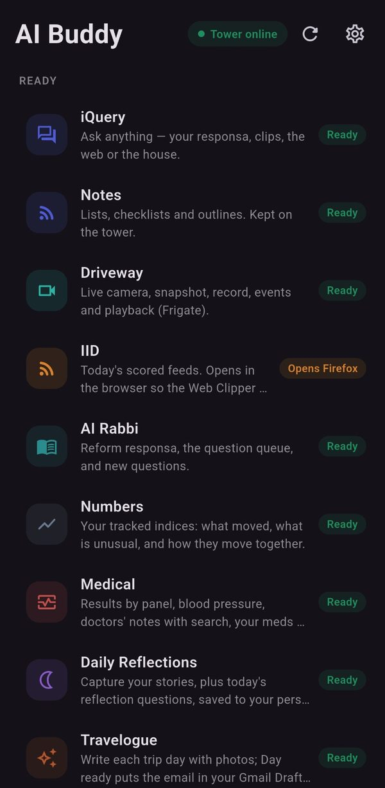
AI Buddy is accessible on devices I set up and approve. Here is how it looks on one of my tablets.
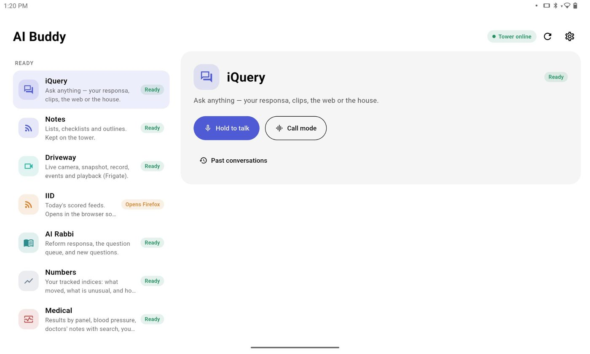
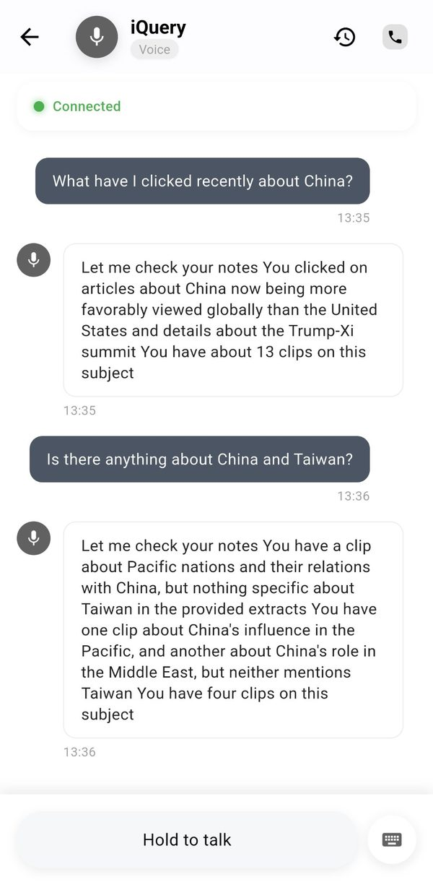
Hold the button and talk. The answer is read back out loud, and shown on screen as text. Or tap the handset and just talk, like a phone call, more convenient but best in a quiet location.
In the screenshot I asked what I have clipped recently about China, then about China and Taiwan. It is answering from my own library of clipped articles, on my own server. When my clips don't cover a question it lets me know.
There is a camera function too. I can ask AI Buddy to take a picture, and then tell me what it sees. Pretty damn accurate.
| You say | Where it goes |
|---|---|
| anything ordinary | the local model, free, ~1 second |
| "what have I saved about…" | my own article library |
| "what's the weather?" | my own search server, then out to the web |
| "how's my print doing?" | my 3D printer |
| "ask Claude…" | out to Claude, deliberately, one question at a time |
Nothing goes outside unless I say a word that sends it there. And it steps aside — if my overnight jobs are using my AI resources on the tower, the buddy says so and waits rather than fighting them for it.
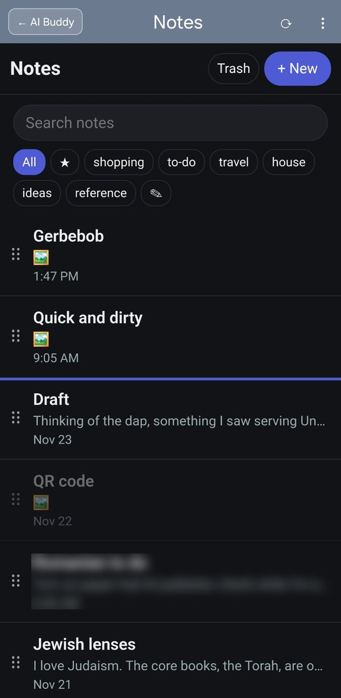
Lists, checklists and outlines, typed or spoken, with photos attached. They live on my tower, not in somebody else's cloud. It is replacing Samsung Notes for me, with the incredible benefit that it is always available, always synced, on all my AI Buddy devices. Very useful to take a photo when I'm fixing something (a screen shot, a mechanical device) and pass that along to my AI helpers on the AI PC Tower to assist me.
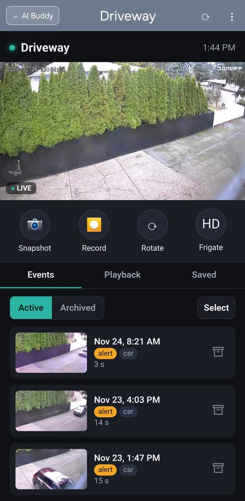
My own open source video recorder software, Frigate, runs on the tower and uses my local AI to spot people and cars. The lane gives me the live camera, a snapshot, recordings and an event list — from anywhere, through my own private network. No cloud camera company, no subscription and the data stays local.
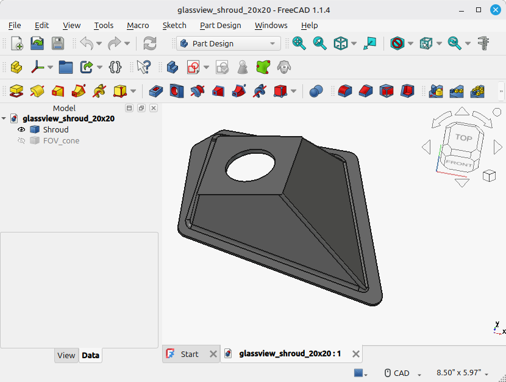
The driveway camera's window shroud, as FreeCAD drew it — angled so the lens looks down the driveway, not at the glare.
I have a Voron 2.4 3D printer. It was gathering dust as many of my projects do, but I wired Claude Code to FreeCAD directly.
I can now describe what I want in plain English with some anchoring numbers and Claude Code builds real, editable geometry. The camera shroud for the driveway camera was built this way. The camera came with a shroud that tilted 20 degrees, either down or left, and I wanted a shroud that pointed both directions (down and left) at the same time. Still took some trial and error, but I just described how I want things changed. Along the way, improved the quality of my prints as well by fine tuning settings.
The result is a much lower-friction loop: think of a part, describe it, print it. Create anything, any time. Just another new capability in our maker-changing world.
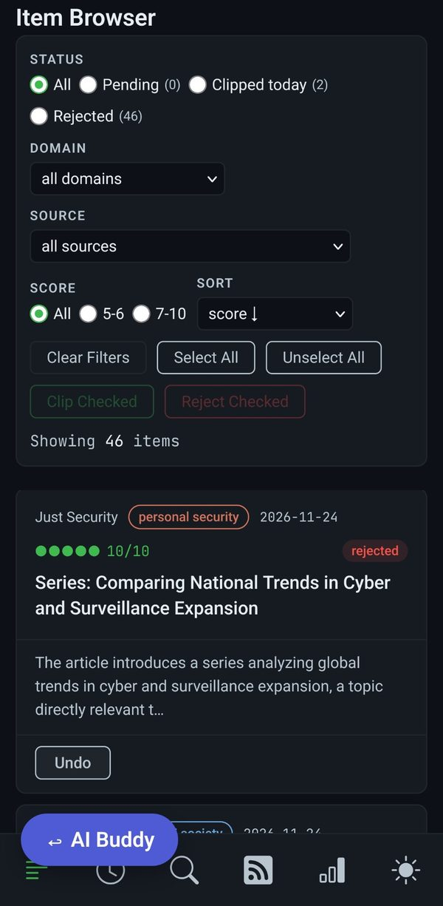
Today's news feeds, scored by an algorithm based on my interests and priorities, ready to read on my devices. I pick the feeds, the AI ranks articles so I only see what seems relevant. It opens into Firefox on purpose, because from there it is a piece of cake to apply a clipping plugin that drops the articles into Obsidian where my AI minions massage it and ingest it into my libraries — the same libraries iQuery answers from.
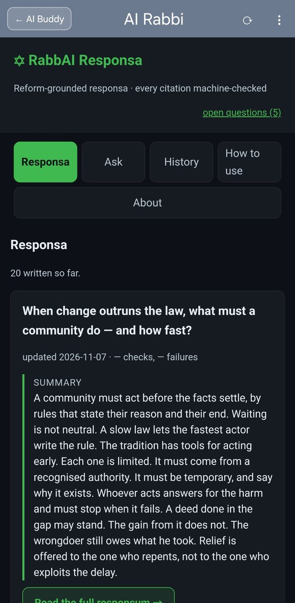
Attempting to ask what Jewish thinking would be on new issues facing us. Is AI alive? Can it have a moral code? Am I still a person if AI Buddy is part of me? What are our obligations for civil disobedience these days? What should be our stance to universal Flock camera surveillance? RabbAI Responsa attempts to answer these questions by looking at classical Jewish written rabbinic rulings and opinions, and extrapolating forward.
A work in progress, but certainly is surfacing some interesting concepts. One was an extension of the Turing test. If a warm and fuzzy robot can emote with humans and respond to needs such as comforting the grieving to the point it is indistinguishable from a caretaker, is it alive? I think the answer is no, not because it can't be distinguished from a human in its action, but because it may not have intent grounded in a moral framework (tikkun olam - repair the world).
DISCLAIMER - This is a personal project, for personal enlightenment. No further claims are made.
See a mockup of the app →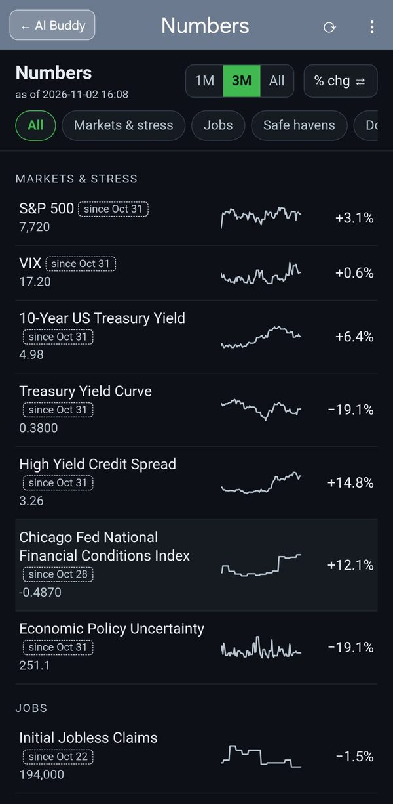
The handful of market and economic indices I have selected to track: what moved, what is unusual, and which ones move together. Charted on the tower from public data.
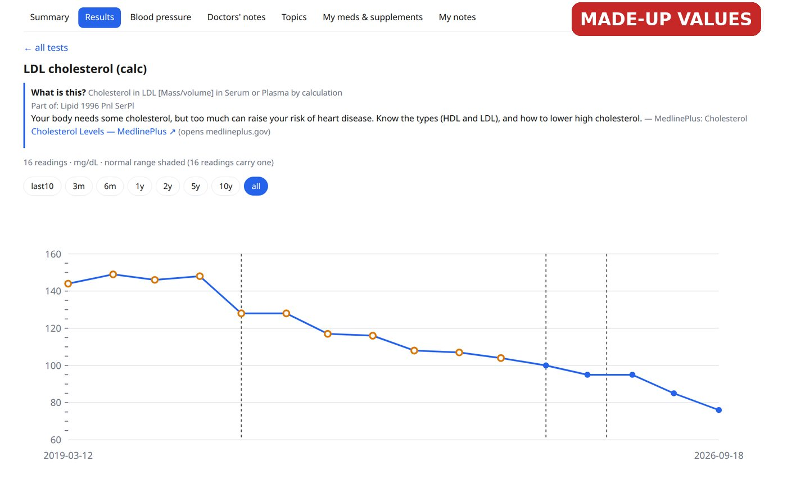
I don't know about you, but I need the fingers of both hands to count the turnover in my health care providers. So I have built my own copy of my medical records. Established API (programming connections) to several MyCharts (multiple providers), uploaded my personal data (e.g. BP and meds list) and done deep dives on current/discontinued/considered supplements.
Anywhere, anytime, I can call up prior results neatly charted, summarize doctor's notes and ask questions about “should I be taking this?” How useful in practice? Remains to be seen, frankly, but it brings me some comfort in these days of uncertain healthcare.
The medical records page →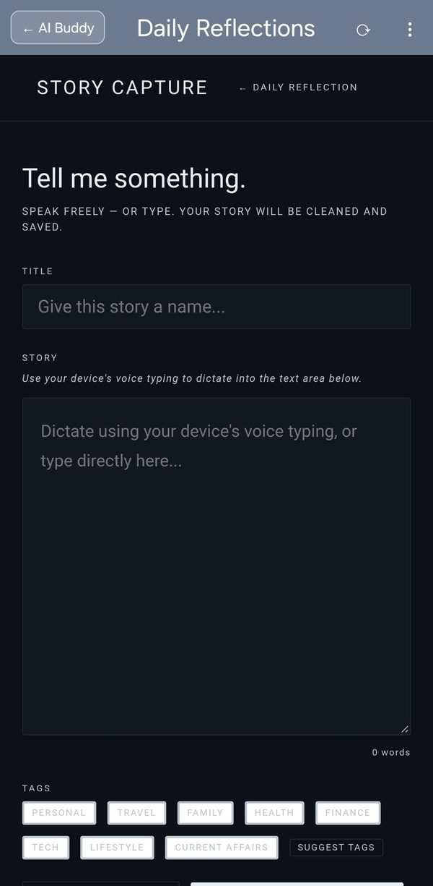
NAIVE BOB: Asks daily questions or tell it a story; responses ingested into a personal "who I am" knowledge database. UPDATED BOB: Dormant now, but structure is there. I realized that this is more of a "talking tombstone" project than something that would feed my Query Workbench. SEASONED BOB: Woke back up as a lane in AI Buddy — a story or today's question is one tap away, wherever I am.
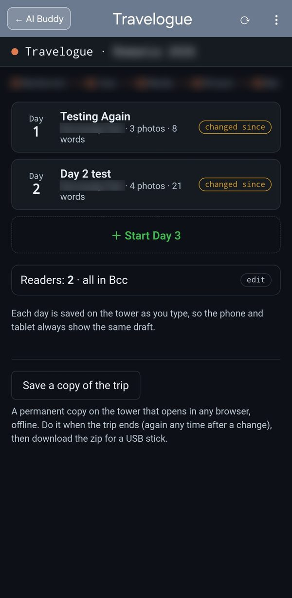
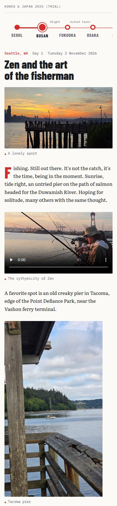
I have written travelogues for years. Now each trip day gets written on the phone with its photos, a little AI flair added around the edges, and when the day is ready it lands in my email drafts to send. The words stay mine.
Going to install Vaultwarden, an open-source self-hosted password manager server that implements the Bitwarden API. It works with Bitwarden browser extensions, desktop apps, and mobile clients, providing features typically gated behind paid Bitwarden plans. Same as Notes, will be synced across all devices all the time.
An extension of IID. In addition to long term interest domains, I want something that can track a named topic closely for a short time, then let go. Could be a price watch for a new computer (the original impetus) or could be a developing news topic (like the war in Iran). A personal briefer.
An extension of IID. Just keeping a watch out for predefined tripwires. Inspired by a website that keeps track of billionaires' private airplanes, on the theory that if they all take off at the same time something is going down. Tripwires to be decided, but in that vein.